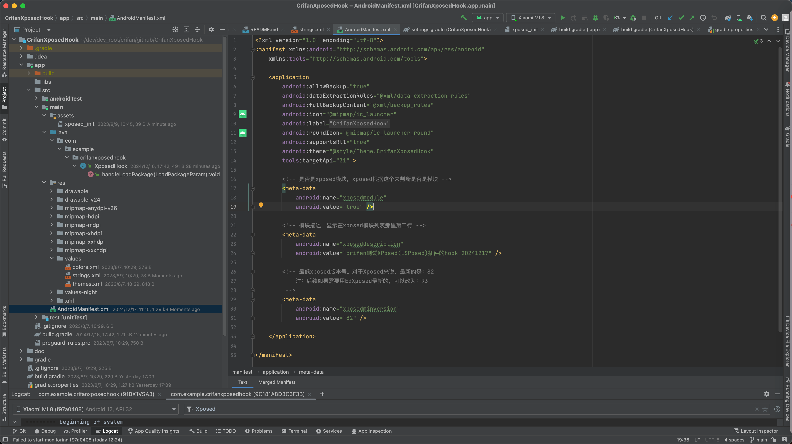
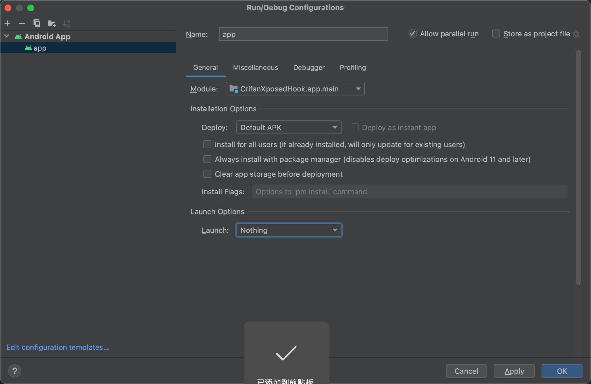
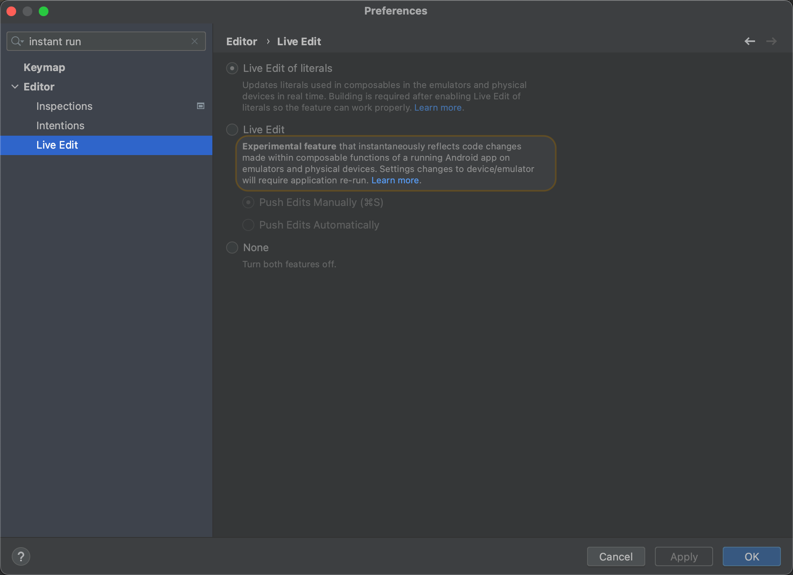

改动项目，增加Xposed相关配置
新增改动或文件
新建xposed_init
新建文件：app/src/main/assets/xposed_init
目的：定义插件hook代码所在的类
文件内容：
com.example.crifanxposedhook.XposedHook

内容说明：
com.example.crifanxposedhook.XposedHook- 是后续的具体的hook插件代码对应的Java的类
com.example.crifanxposedhook：是包名XposedHook：是类名
- 是后续的具体的hook插件代码对应的Java的类
新建hook的Java类文件：XposedHook.java
新建hook代码文件：app/src/main/java/com/example/crifanxposedhook/XposedHook.java
目的： 实现hook代码逻辑
文件内容：
package com.example.crifanxposedhook;
import de.robv.android.xposed.IXposedHookLoadPackage;
import de.robv.android.xposed.XposedBridge;
import de.robv.android.xposed.callbacks.XC_LoadPackage.LoadPackageParam;
public class XposedHook implements IXposedHookLoadPackage {
public void handleLoadPackage(final LoadPackageParam lpparam) throws Throwable {
XposedBridge.log("XposedHook Loaded app: " + lpparam.packageName);
// XposedBridge.log("XposedHook Loaded app: packageName=" + lpparam.packageName + ", processName=" + lpparam.processName);
}
}
本身已有app名称定义：strings.xml
本身已有：app/src/main/res/values/strings.xml
文件内容：
<resources>
<string name="app_name">CrifanXposedHook</string>
</resources>

- 内容说明
- 其中
CrifanXposedHook是当前app名称=Xposed插件名称=安卓项目名称
- 其中
给AndroidManifest.xml中加上xposed相关定义
改动：app/src/main/AndroidManifest.xml
目的：新增Xposed相关配置 -> 让EdXposed等Xposed框架可以识别此（安卓的app是）Xposed插件
核心改动：修改application的部分属性，并加上meta-data的Xposed相关属性
改动后的：
文件内容：
<?xml version="1.0" encoding="utf-8"?>
<manifest xmlns:android="http://schemas.android.com/apk/res/android"
xmlns:tools="http://schemas.android.com/tools">
<application
android:allowBackup="true"
android:dataExtractionRules="@xml/data_extraction_rules"
android:fullBackupContent="@xml/backup_rules"
android:icon="@mipmap/ic_launcher"
android:label="@string/app_name"
android:roundIcon="@mipmap/ic_launcher_round"
android:supportsRtl="true"
android:theme="@style/Theme.CrifanXposedHook"
tools:targetApi="31" >
<!-- 是否是xposed模块，xposed根据这个来判断是否是模块 -->
<meta-data
android:name="xposedmodule"
android:value="true" />
<!-- 模块描述，显示在xposed模块列表那里第二行 -->
<meta-data
android:name="xposeddescription"
android:value="crifan测试XPosed(LSPosed)插件的hook 20241217" />
<!-- 最低xposed版本号。对于Xposed来说，最新的是：82
注：后续如果需要用EdXposed最新的，可以改为：93
-->
<meta-data
android:name="xposedminversion"
android:value="82" />
</application>
</manifest>

- 参数说明
xposedmodule=true- 表示是Xposed插件=Xposed模块
xposeddescription=crifan测试XPosed插件hook- 插件描述，会显示=出现在Xposed模块列表中的文字描述部分
xposedminversion=82- 表示：
Xposed Framework API=Xposed框架的API版本- 此处值：
82- 最新的Xposed框架的API版本就是82
- 不过其实也是好多年前了（好像是2016年，当前此刻是2023年）
- 对应支持Android版本：
> Android 5.0- 对于后续要测试的安卓手机的安卓版本（
Android 8.1，Android 11，Android 13）等，完全满足此要求
- 对于后续要测试的安卓手机的安卓版本（
- 最新的Xposed框架的API版本就是82
- 可选值=所有版本：
36、37、39、42、50、51、52、53、60、63、65、81、82 - 另外最好：去你的安卓手机中确认当前Xposed的API版本
- 说明
- 即使你的Xposed的API版本是更新的版本（
v93.0、v100等），但是：也是兼容旧版本（此处的v82的）
- 即使你的Xposed的API版本是更新的版本（
- 比如
- 此处的Pixel5中，EdXposed首页中的：
v93.0
- 表示用的是，更加新的93的EdXposed的Xposed的API版本
- 注：更新的API版本，支持其他更新的API接口
- 但是同时会兼容旧版本Xposed的API接口的
- 此处安卓12的小米8刷了LineageOS v19.1后的LSPosed中：
API版本是100 - 如果是之前旧的
Android 4.4的安卓手机，则往往Xposed的API版本写的是54，测试就要此处设置为xposedminversion=53- 表示支持
<= Android 5.0，因为支持Android 4.x的Xposed的API版本是54
- 表示支持
- 此处的Pixel5中，EdXposed首页中的：
- 说明
- 此处值：
给app/build.gradle中加上xposed包的依赖
改动文件：app/build.gradle
目的：让Gradle下载相关xposed的jar包（和相关源码）
核心改动：加上：
versionName "2024.12.16.1742"
compileOnly 'de.robv.android.xposed:api:82'
变成：
app/build.gradleplugins { id 'com.android.application' } android { namespace 'com.example.crifanxposedhook' compileSdk 33 defaultConfig { applicationId "com.example.crifanxposedhook" minSdk 24 targetSdk 33 versionCode 1 versionName "2024.12.16.1742" testInstrumentationRunner "androidx.test.runner.AndroidJUnitRunner" } buildTypes { release { minifyEnabled false proguardFiles getDefaultProguardFile('proguard-android-optimize.txt'), 'proguard-rules.pro' } } compileOptions { sourceCompatibility JavaVersion.VERSION_1_8 targetCompatibility JavaVersion.VERSION_1_8 } } dependencies { implementation 'androidx.appcompat:appcompat:1.6.1' implementation 'com.google.android.material:material:1.9.0' testImplementation 'junit:junit:4.13.2' androidTestImplementation 'androidx.test.ext:junit:1.1.5' androidTestImplementation 'androidx.test.espresso:espresso-core:3.5.1' compileOnly 'de.robv.android.xposed:api:82' // compileOnly 'de.robv.android.xposed:api:82:sources' // 不要导入源码，这会导致idea无法索引文件，从而让语法提示失效 }

参数说明：
- xposed相关
compileOnly 'de.robv.android.xposed:api:82'- xposed的jar包依赖，版本是用最新的
82- 和之前的
AndroidManifest.xml中的xposedminversion=82是对应的
- 和之前的
- xposed的jar包依赖，版本是用最新的
- 注意：
- 不要添加Xposed的source源码
- 应该是：
// compileOnly 'de.robv.android.xposed:api:82:sources' - 不要是：
compileOnly 'de.robv.android.xposed:api:82:sources'- 否则后续会导致代码找不到后续的API接口的类
- 具体详见：常见问题
- 否则后续会导致代码找不到后续的API接口的类
- 应该是：
- 不要添加Xposed的source源码
- 注：
- xposed官网推荐的
provided（而不要用compile）已废弃，所以改用推荐的：compileOnlycompileOnly：表示代码编译会调用到，但是编译后输出的apk不会包含XPosed的库- 这样就不会导致报错：
java.lang.IllegalAccessError Class ref in pre-verified class resolved to unexpected implementation
- 这样就不会导致报错：
- xposed官网推荐的
- app相关
versionName "2024.12.16.1742"- app的版本号
- 在app列表详情页和EdXposed的Xposed插件列表中可以看到
- app的版本号
给项目全局根目录的Gradle配置文件settings.gradle加上Xposed的源地址
项目级别的=全局的Gradle配置文件：settings.gradle
目的：加入xposed包所在的源的依赖
改动：
给dependencyResolutionManagement的repositories加上Xposed的源：
maven { url 'https://maven.aliyun.com/repository/public/' }
或
maven { url 'https://api.xposed.info/' }
变成：
settings.gradlepluginManagement { repositories { google() mavenCentral() gradlePluginPortal() } } dependencyResolutionManagement { repositoriesMode.set(RepositoriesMode.FAIL_ON_PROJECT_REPOS) repositories { google() mavenCentral() // jcenter() maven { url 'https://maven.aliyun.com/repository/public/' } } } rootProject.name = "CrifanXposedHook" include ':app'

参数说明：
- xposed的源
- 最新的=可用的
https://maven.aliyun.com/repository/public/https://api.xposed.info/
- 之前的=已废弃=不可用的
jcenter()- 注：jcenter的源，早已废弃
- 对应的，之前可用，现在早已失效的地址
- 分别对应着（之前的）配置
compileOnly 'de.robv.android.xposed:api:82'compileOnly 'de.robv.android.xposed:api:82:sources'
- 注：jcenter的源，早已废弃
- 最新的=可用的
调试参数设置
Launch改为Nothing
此处，由于：
- 新建项目时，就选择了
No Activity - 且此处项目中的确也没有Activity
所以需要去：
把项目调试配置中的：
Android Studio->Run->Edit Configuration->Android App->app->General->Launch Options->从默认的：
Launch:Default Activity

改为：
Launch:Nothing- 
说明：
- 如果不改，则默认去Debug调试，会去尝试启动Default Activity，但是由于此处没有Activity=页面，导致报错
Could not identify launch activity: Default Activity not found Error while Launching activity Failed to launch an application on all devices - 改了后，后续点击Debug调试按钮去调试时
- 最后会报错
- 要么是：
Timed out waiting for process xxx to appear on - 要么是：
Processes xxx are not found Aborting session
- 要么是：
- 原因：感觉是，安卓中，Activity=页面=Process=进程
- 而当前Xposed插件的项目中，的确没有Activity，所以没有进程可供调试，所以报错
- 最后会报错


其他
无需关闭Instant Run
此处Android Studio的版本是Android Studio Flamingo | 2022.2.1 Patch 2，此处：
- 已经没有官网提示的Instant Run了
- 最多算是有个，或许相关的，但是默认没有开启的
Live Edit- 
- 最多算是有个，或许相关的，但是默认没有开启的
- 所以无需去：关闭
Instant Run。